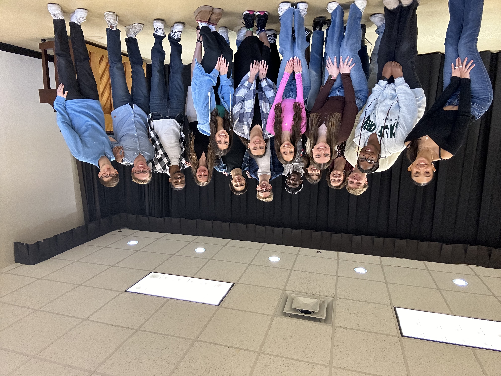

Class Website Project
A simple website I built using HTML and CSS for this class.
Skills used: HTML, CSS, Flexbox
Web Designer & Performer
As a creative individual, I am passionate about creating functional and accessible content with an artistic flair.

My name is Hannah Cole, and I am currently a student at Texas Christian University pursuing a double major in Digital Culture/Data Analytics (DCDA) and Theatre. I am currently located in Fort Worth, TX, for school, but I am originally from Virginia Beach, VA. As a double major in DCDA and Theatre, I hope to pursue careers in web design and performance post-grad.
I am skilled in HTML and CSS, and am adaptable, creative, and work well with others. I am currently expanding my knowledge of different web design software to improve my design abilities. My goal as a web designer is to create simple, effective, and memorable websites for users.
I have a deep passion for the arts and have always loved performing. My interest in design, both online and in the theatre realm, is more recent, but I am learning more and more every day. When I’m not in a rehearsal or honing my web design skills, I enjoy journaling, embroidery, and exploring the DFW with friends. I love finding artistic things to do and learn that are totally separate from the careers I am pursuing. It allows me to have a great work/life balance and still be creative!
HTML, CSS, Learning Javascript
Visual design, User experience, Choreography
VS Code, GitHub, n8n, iMovie
Problem-solving, Adaptable, Creative
A simple website I built using HTML and CSS for this class.
Skills used: HTML, CSS, Flexbox
Compiled and edited videos and sound clips to create a dance reel for professional audition use.
Skills used: iMovie, file organization, musicality
I choreographed a group dance, “The Chant”, from the musical Hadestown. I held auditions, cast the piece, conducted rehearsals to teach the dancers, edited the music, and selected costumes.
Skills to learn: Leadership, organization, creativity, time management
hannahcole613@gmail.com